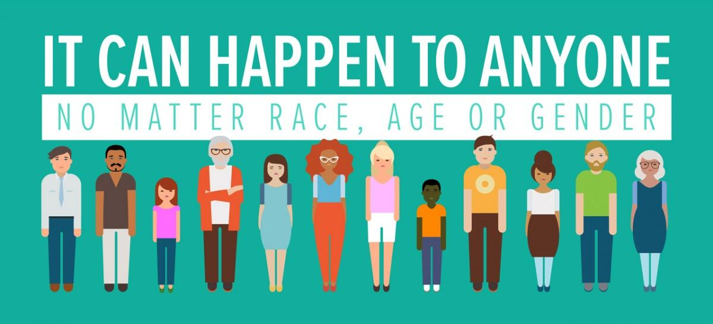

Human trafficking-- most of us have heard of it, but always think of it as an issue that only takes place in other countries. We think, "that's too bad, I hope they find that poor woman/man", and go back to our normal lives never realizing that it is a real problem that affects our local communities. The truth is that human trafficking is present all around the world and is the second most profitable source of transnational crime, with about $32 billion a year being exchanged. Human trafficking comes in different forms, with the most common being forced labor and sexual exploitation. Human trafficking is often a hidden crime as victims face many roadblocks to getting help such as threats from their traffickers, language barriers, and fear of deportation or legal action.
First of all, one needs to recognize that human traffickers do not discriminate. Although many times victims come from vulnerable circumstances such as poverty, unemployment, homelessness, youth or immigrant populations, any person regardless of race, gender, age, or socioeconomic status. One of the best ways to help prevent human trafficking is what you are doing now-- educating yourself about this issue to raise awareness. Programs in schools and communities work toward this same goal as well. Identifying victims can be achieved through screening tools used in social services, educational facilities, and medical settings. Outside of these settings however, keeping an eye out for someone who looks timid, scared, has bruises, has had sudden dramatic changes in behavior, or suddenly seems disconnected from family, friends, and usual activities can help you identify someone who could be a victim of human trafficking.
The most common form of human trafficking here in Utah is sex trafficking, with the most common venues being massage/spa businesses, the pornography industry, hotel or motel based trafficking, or trafficking based through online advertisements. Apart from sex trafficking, labor trafficking also takes place here in Utah, primarily in agricultural settings. The 2020 National Human Trafficking Hotline Data Report for Utah showed that 182 tips were recieved throughout the year alerting authorities to potential trafficking situations, the majority of which were made by community members. Normal people like you and I can and do make a difference. Don't hesitate to make a call if you see something that looks off, you could be the deciding factor for saving someones life.
To report a suspected case of human trafficking, go to the National Human Trafficking Hotline website or call 1-888-373-7888.
{% endblock %}